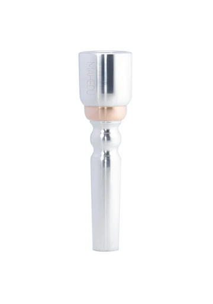
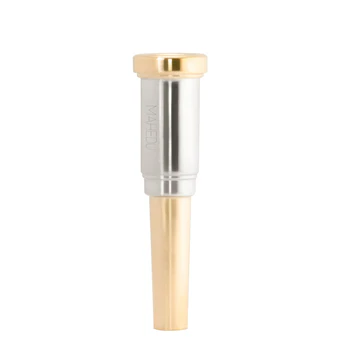
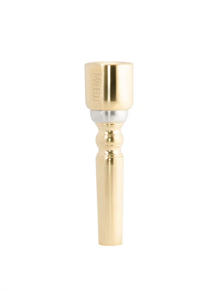
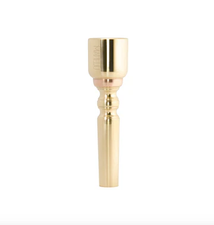
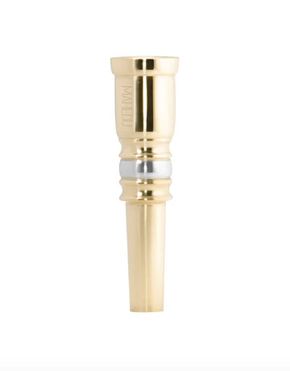

boquillas linea especial
-

Boquilla AC-4
Material: Alpaca Y Cobre
Precio: $600
Apoyo de labio: Profundidades de taza - acabado del apoyo: -

Boquilla LA-1
Material: Laton ,Alpaca
Precio: $550
Apoyo de labio: Profundidades de taza - acabado del apoyo: -

Boquilla LIB-B
Material: Laton,Alpaca
Precio: $670
Apoyo de labio: Profundidades de taza - acabado del apoyo: -

Boquilla LC-4
Material: Laton y Cobre
Precio: $800
Apoyo de labio: Profundidades de taza - acabado del apoyo: -

Boquilla LM
Material: Laton y Alpaca
Precio: $700
Apoyo de labio: Profundidades de taza - acabado del apoyo: